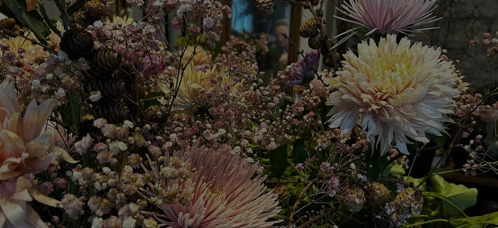
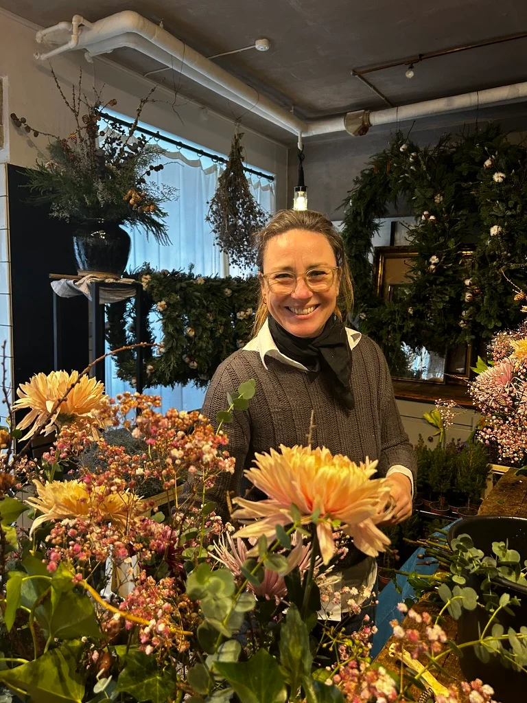

Anna Riborg

Om Anna Riborg
I dette interview får du indblik i Anna Riborgs fascinerende rejse som blomsterdekoratør – en rejse, der starter med hendes tidlige skridt på den kreative sti og fører til etableringen af hendes eget værksted og butik. Anna deler ikke kun sin professionelle udvikling, men også sin dybe passion for at skabe kunst gennem blomster. Gennem samtalen fremhæves ikke blot hendes teknikker, men også de personlige historier og betydninger, der knytter sig til hver enkelt valgt blomst.